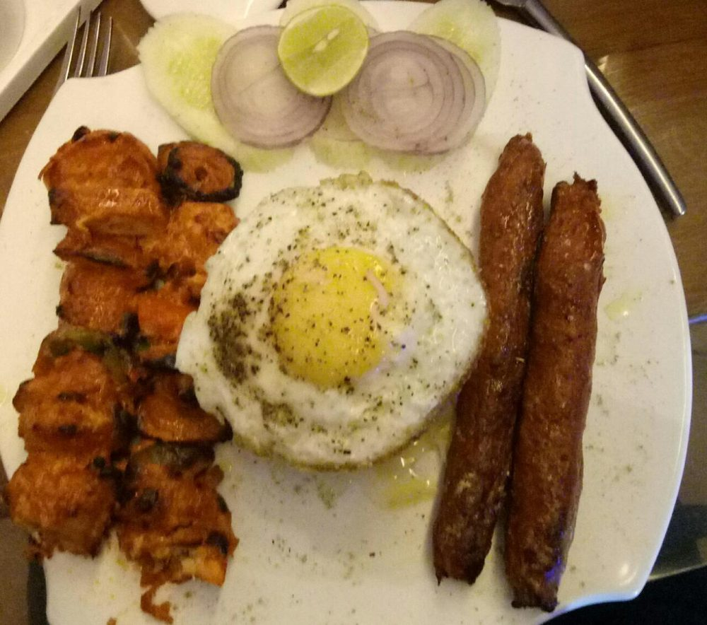

Contains: milk, egg
Checked against the ingredient list for ten allergens: milk, egg, fish, crustaceans, tree nuts, peanuts, sesame, mustard, soy and gluten. Brands vary, so read the label on anything new to you.
Ingredients
Quantities for 4.
- 600g minced, with some fat Mutton
- 400g Basmati Rice
- 1, grated and squeezed dry Onionsqueeze it, or the kebabs fall apart
- 4 yolks, to serve Eggstraditionally raw on the hot rice; cook them if you prefer
- 80g Butter
- a pinch, soaked in warm milk Saffron
- 1 tbsp paste Ginger
- 1 tbsp paste Garlic
- 1.5 tsp Black Pepper
- 1 tsp Chilli Powder
- to taste Salt
Cookware
stovetop, oven
Before you start
- Borrowed from Iranian chelo kabab and kept alive by Bombay's Irani restaurants. The butter, the saffron rice and the yolk are all part of it.
- A raw yolk on hot rice is traditional. If you would rather not, a soft-cooked yolk does the same job.
Method
- Mix the mince with the squeezed onion, ginger, garlic, pepper, chilli powder and salt. Knead 5 minutes until sticky.The kneading develops the bind. Under-worked mince crumbles off the skewer.
- Rest the mixture in the refrigerator 30 minutes, then shape onto skewers in long flat kebabs.
- Cook the rice, drain, and fold through half the butter and the saffron milk.
- Grill or pan-fry the kebabs on high 4 minutes a side until charred outside and just cooked within.
- Serve the kebabs on the rice, dot with the remaining butter and slide a yolk on top of each plate.
Storage
The kebabs keep 2 days refrigerated. Cook the rice fresh and add the yolk at the table, never in advance.
Nutrition Medium estimate
High protein: 45 g a serving, 23% of the calories
| Per serving351 g | Per 100 g | |
|---|---|---|
| Calories | 761 kcal | 217 kcal |
| Protein | 44.6 g | 13 g |
| Carbohydrate | 86.3 g | 25 g |
| of which sugars | 1.6 g | 0 g |
| Fibre | 2.5 g | 1 g |
| Fat | 24.7 g | 7 g |
| of which saturated | 13.0 g | 4 g |
| of which unsaturated | 9.6 g | 3 g |
Ingredients given to taste count as zero, so the real figures run a little higher. Nearest database match used for mutton. Estimated from raw ingredients using USDA FoodData Central.
Written and checked against sources, not cooked in a test kitchen. Times, yields, allergens and nutrition are worked out rather than measured, so use your own judgement on doneness and on storing. More in About.